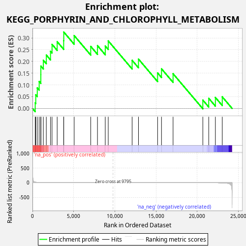
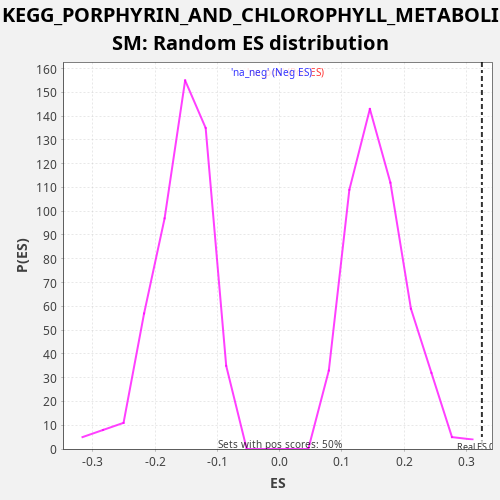

| Dataset | LabCL |
| Phenotype | NoPhenotypeAvailable |
| Upregulated in class | na_pos |
| GeneSet | KEGG_PORPHYRIN_AND_CHLOROPHYLL_METABOLISM |
| Enrichment Score (ES) | 0.32502115 |
| Normalized Enrichment Score (NES) | 2.06258 |
| Nominal p-value | 0.0020120724 |
| FDR q-value | 0.034405373 |
| FWER p-Value | 0.258 |

| SYMBOL | RANK IN GENE LIST | RANK METRIC SCORE | RUNNING ES | CORE ENRICHMENT | |
|---|---|---|---|---|---|
| 1 | HCCS | 333 | 19.096 | 0.0233 | Yes |
| 2 | UGT1A9 | 399 | 15.782 | 0.0576 | Yes |
| 3 | FTH1 | 584 | 9.641 | 0.0871 | Yes |
| 4 | COX10 | 814 | 6.088 | 0.1147 | Yes |
| 5 | MMAB | 1015 | 4.355 | 0.1434 | Yes |
| 6 | CP | 1018 | 4.348 | 0.1804 | Yes |
| 7 | CPOX | 1320 | 2.697 | 0.2050 | Yes |
| 8 | FECH | 1682 | 1.716 | 0.2271 | Yes |
| 9 | HMOX1 | 2190 | 1.018 | 0.2432 | Yes |
| 10 | UGT1A10 | 2377 | 0.845 | 0.2726 | Yes |
| 11 | ALAS1 | 3000 | 0.503 | 0.2839 | Yes |
| 12 | BLVRB | 3789 | 0.272 | 0.2884 | Yes |
| 13 | BLVRA | 3801 | 0.270 | 0.3250 | Yes |
| 14 | HMOX2 | 5064 | 0.109 | 0.3099 | No |
| 15 | EARS2 | 7075 | 0.021 | 0.2640 | No |
| 16 | PPOX | 7895 | 0.009 | 0.2672 | No |
| 17 | COX15 | 8840 | 0.002 | 0.2653 | No |
| 18 | UROD | 9202 | 0.001 | 0.2874 | No |
| 19 | GUSB | 12103 | -0.007 | 0.2047 | No |
| 20 | UGT1A7 | 12875 | -0.015 | 0.2099 | No |
| 21 | ALAD | 15197 | -0.073 | 0.1511 | No |
| 22 | UROS | 15671 | -0.090 | 0.1686 | No |
| 23 | HMBS | 17076 | -0.174 | 0.1476 | No |
| 24 | UGT2B7 | 20690 | -0.964 | 0.0355 | No |
| 25 | UGT1A1 | 21406 | -1.434 | 0.0430 | No |
| 26 | UGT1A6 | 22214 | -2.612 | 0.0467 | No |
| 27 | UGT1A4 | 23051 | -6.680 | 0.0492 | No |

{kind=link}
{kind=link}